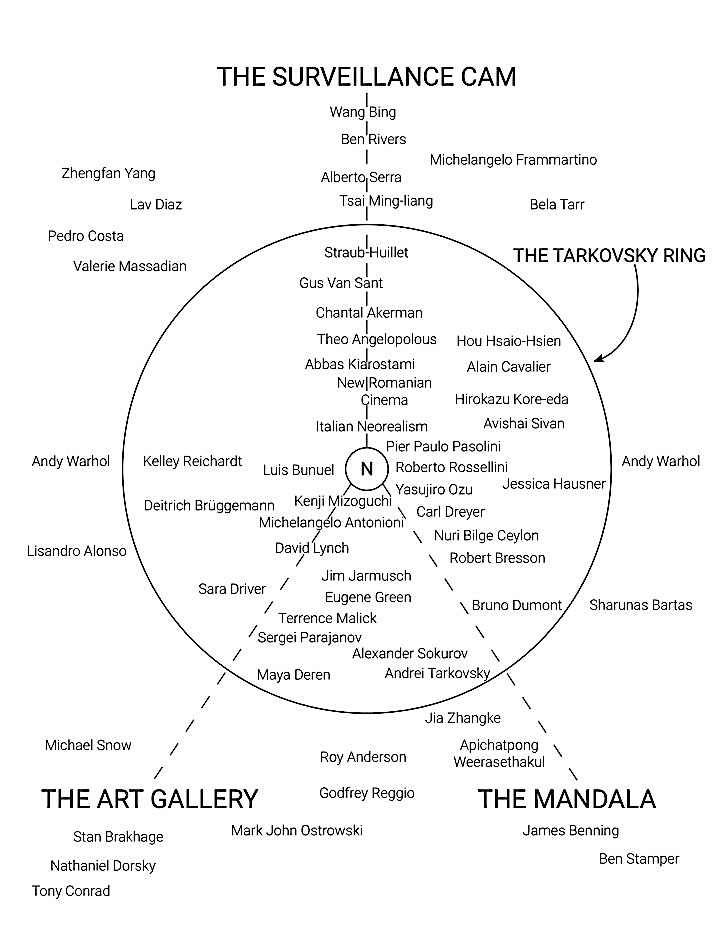

Schrader's
diagram
Paul Schrader drew this map in his new introduction to the 2018 reissue of Transcendental Style in Film: Ozu, Bresson, Dreyer. It shows how arthouse cinema left narrative after the war. In a 2018 IndieWire interview he called it a cosmogony: “I laid out this cosmogony of where all these directors were after breaking free from the nucleus of narrative and they're electrons shooting off in these three directions.”
The reading on this page was made from the image itself. The diagram was transcribed name by name at full size, and every name was checked against outside sources. It holds fifty-five names and two schools. Two readings are still open. A name at the far edge of the Mandala reads as Ben Stamper, but no filmmaker of that name could be confirmed, so it stays marked [unverified]. Andy Warhol also appears twice, just inside the ring on each side of the circle. The article that published the diagram names De Sica, Bergman, and Rivette in its text as well. They aren't on the chart itself, and the table on the Exploration page reflects that.

The structure
N sits at the centre and stands for traditional narrative cinema, the nucleus. Three directions run out from it. They are the ways Schrader holds that filmmakers left narrative behind after the war, a shift Gilles Deleuze called the time-image.
| Direction | What it does | Who points there |
|---|---|---|
| The Mandala | Meditation cinema; the trance | Ozu, Bresson, and Dreyer near the centre; Ceylan, Dumont, Tarkovsky, and Apichatpong further out; Benning past the ring |
| The Surveillance Cam | The unblinking eye on unchanged reality | The neorealists near the centre; Kiarostami, Akerman, Kore-eda, and Hou inside; Serra and Tsai well out; Costa, Wang Bing, and Diaz past the ring |
| The Art Gallery | Pure imagery: light, colour, abstraction, dream | Mizoguchi, Antonioni, and Buñuel near the centre; Lynch, Malick, and Deren inside; Brakhage, Dorsky, and Conrad past the ring |
The outer boundary is the Tarkovsky Ring. In Schrader's words, crossing it marks the point where an artist “is no longer making cinema for a paying audience”, and the cinema past it is made for institutions and museums. Fifteen of the chart's names sit past the ring, among them Brakhage, Dorsky, Conrad, Wang Bing, Costa, Diaz, and Benning. The book's text places the transcendental style itself just inside the ring.
Two schools are written as labels instead of names. Italian Neorealism sits just off the centre beside Rossellini and Pasolini, and New Romanian Cinema sits further out on the same side. Four names sit on the vertical line below the centre, exactly between the Mandala and the Art Gallery. Warhol is written twice, at the left and right edges of the circle. The sections below give every name on the chart and read each direction from the centre outward.
Every name in the Surveillance Cam
| Name | On the diagram |
|---|---|
| Pier Paolo Pasolini | just off the centre, beside the Italian Neorealism label |
| Roberto Rossellini | beside Pasolini, the school reading as the direction's origin |
| Abbas Kiarostami | the modern centre of the sector, closer to N than most |
| Theo Angelopoulos | a moderate walk out, inside the ring |
| Chantal Akerman | at the same distance, on the sector's centre line |
| Jean-Marie Straub & Danièle Huillet | on the centre line, further out than Akerman |
| Hirokazu Kore-eda | upper right, inside the ring |
| Avishai Sivan | low in the sector, near the neorealists; Israeli, of Tikkun |
| Alain Cavalier | mid-sector; French, of Thérèse |
| Kelly Reichardt | at the sector's left edge, on the horizontal through N |
| Gus Van Sant | mid-sector |
| Hou Hsiao-hsien | upper right, inside the ring |
| Tsai Ming-liang | well out along the direction |
| Albert Serra | farther out still, inside the ring |
| Valérie Massadian | near the ring on the sector's left side |
| Béla Tarr | just past the ring; the diagram's edge of festival cinema |
| Ben Rivers | just past the ring; British, between gallery and festival |
| Lav Diaz | past the ring; the longest films on the chart |
| Michelangelo Frammartino | past the ring; of Le quattro volte |
| Wang Bing | well past the ring |
| Pedro Costa | at the sector's far edge, past the ring |
| Zhengfan Yang | the sector's far corner; Chinese, based in the United States, working in long takes |
Every name in the Art Gallery
| Name | On the diagram |
|---|---|
| Kenji Mizoguchi | the closest name of all to the centre |
| Michelangelo Antonioni | a short step out |
| Luis Buñuel | just off the centre on the gallery side |
| David Lynch | mid-sector |
| Terrence Malick | mid-sector |
| Dietrich Brüggemann | mid-sector; German, of Stations of the Cross |
| Sergei Parajanov | mid-sector |
| Sara Driver | mid-sector; American independent filmmaker |
| Maya Deren | out along the direction |
| Andy Warhol | written twice, at the circle's left and right edges, just inside the ring; read here on the gallery side |
| Lisandro Alonso | near the ring, inside |
| Mark John Ostrowski | past the ring; of Sixty Spanish Cigarettes (2015) |
| Michael Snow | past the ring; Canadian structural filmmaker |
| Stan Brakhage | far past the ring |
| Nathaniel Dorsky | far past the ring |
| Tony Conrad | the farthest name from the centre on the whole chart |
Every name in the Mandala
| Name | On the diagram |
|---|---|
| Yasujiro Ozu | a short step from the centre; the direction's origin |
| Carl Theodor Dreyer | beside Ozu |
| Nuri Bilge Ceylan | midway out |
| Robert Bresson | midway out |
| Jessica Hausner | mid-sector; Austrian |
| Aleksandr Sokurov | out along the direction |
| Bruno Dumont | out along the direction |
| Andrei Tarkovsky | out along the direction, inside the ring the diagram names for him |
| Jia Zhangke | well out, inside the ring |
| Šarūnas Bartas | near the ring, inside; Lithuanian |
| Apichatpong Weerasethakul | at the ring's edge, inside |
| James Benning | past the ring |
| Ben Stamper | the outer edge beside Benning; transcribed as written and left [unverified] |
Every name on the lower axis
Four names sit on the vertical line below N, exactly between the Mandala and the Art Gallery. The chart gives them no direction of their own. Read together they run from Jarmusch's blank comedy through the staged tableaux of Green and Andersson to Reggio's wordless montages.
| Name | On the diagram |
|---|---|
| Jim Jarmusch | on the vertical below N, nearest the centre |
| Eugène Green | on the same line |
| Roy Andersson | on the same line, well out |
| Godfrey Reggio | on the same line, at the ring; read as just past it |
Against the circles
The three directions match this map's circles almost one to one, although the circles were drawn without reference to Schrader. That is either a confirmation or a sign of a shared vocabulary.
| Schrader | This map |
|---|---|
| The Mandala (Ozu, Bresson, Dreyer) | Spiritual minimalism: Bresson, Schanelec, Dumont, Erice, and Kaul |
| The Surveillance Cam (Kiarostami) | Observational machines: Farocki, Benning, Geyrhalter, and Schäublin |
| The Art Gallery (Mizoguchi, Antonioni, Lynch) | Avant-garde: Deren, Markopoulos, Grandrieux, Brakhage, and Barley |
| The duration lineage feeding all three | Slow cinema: Tarr, Akerman, Alonso, Diaz, and Patiño |
The 40 tier-1 directors at the core of this map sit almost entirely inside Schrader's ring and lean toward the Mandala. Only Tarr and Benning sit past it. The avant-garde circle covers much of the territory past the Tarkovsky Ring, which is also where several of the collection's barely watched names are found: Wang Bing, Dorsky, Hutton, and Beavers.
Schrader's original three directors are all in the collection's data. Bresson is in favourite tier 1, and Ozu and Dreyer are in favourite tier 3 on the full list.
Two differences are worth keeping. The guide divides this same territory by materialism against devotion, while the map divides it by pace and apparatus. The guide's Nocturnal underground (Grandrieux, Barley, Kelemen, and Fotopoulos) also has no circle here at all.
Sources
- Chris O'Falt, “From Lynch to Kiarostami to Ozu: See Where Your Favorite Directors Fall on Paul Schrader's Chart of Non-Narrative Cinema”, IndieWire, 24 May 2018; the exclusive with Schrader's explanation, and the source the transcription was checked against.
- Colin Marshall, “Paul Schrader Creates a Diagram Mapping the Progression of Arthouse Cinema”, Open Culture, 7 September 2020; it reproduces the diagram.
- Diagram © University of California Press, from the 2018 reissue of Transcendental Style in Film: Ozu, Bresson, Dreyer.
- The transcription and the open readings are recorded in full in research/sessions/2026-09-20-schrader-full-reading.md.